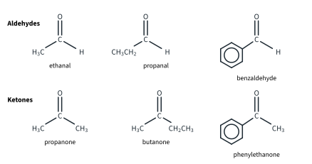
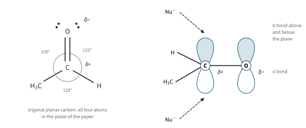
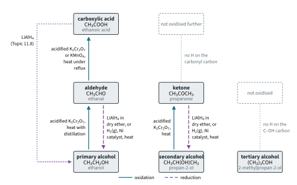
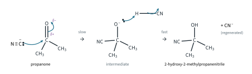
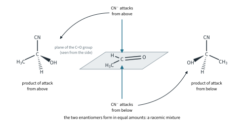
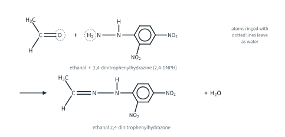
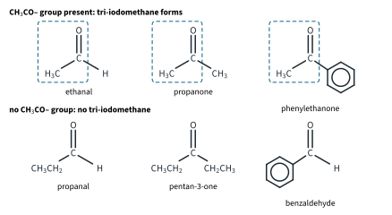
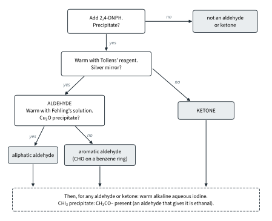
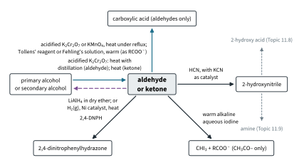

Carbonyl Compounds 1
Topic 11.7 · Carbonyl Compounds Part 1
On this page
Introduction
Aldehydes and ketones both contain the carbonyl group, C=O. The difference is what is attached to the carbonyl carbon. In an aldehyde the C=O is at the end of a chain: the carbonyl carbon carries at least one H atom, and the functional group is written –CHO. In a ketone the C=O is in the middle of a chain: the carbonyl carbon is bonded to two other carbon atoms, RCOR′. Aldehydes are named with the ending -al and ketones with -one (Topic 11.1): ethanal, propanal, propanone, butanone. Propanone and butanone need no locant, because the C=O can only be in one place.

That one H atom makes a big difference to the chemistry, as you will see.
| Aldehyde | Ketone | |
|---|---|---|
| General formula | RCHO (R = H, alkyl or aryl) | RCOR′ (R, R′ = alkyl or aryl) |
| Carbonyl carbon bonded to | one H and one C (two H in methanal) | two C |
| Named example | ethanal, CH3CHO | propanone, CH3COCH3; phenylethanone, C6H5COCH3 |
| Easily oxidised? | yes, to a carboxylic acid | no |
This topic covers how aldehydes and ketones are made from alcohols and turned back into them (9476 11.7(a)), their nucleophilic addition with hydrogen cyanide (11.7(b)), the 2,4-DNPH test for the carbonyl group (11.7(c)), the tests that tell an aldehyde from a ketone (11.7(d)) and the tri-iodomethane test for the CH3CO– group (11.7(e)). It builds on Topic 11.3 (nucleophilic addition, mechanism 5) and Topic 11.6 Part 1 (oxidation of alcohols), and leads into Topic 11.8 (carboxylic acids).
The carbonyl group
The C=O double bond is made of one σ bond and one π bond, just like C=C (Topic 11.1). The carbonyl carbon is sp2 hybridised, so it and the three atoms bonded to it lie in one plane, with bond angles of about 120° (trigonal planar). The π bond lies above and below that plane.

The big difference from C=C is polarity. Oxygen is much more electronegative than carbon, so the electrons in the C=O bond, especially the loosely held π electrons, are pulled towards the oxygen: Cδ+=Oδ−. The carbonyl carbon is electron-poor, so it attracts nucleophiles (Topic 11.3). Because the carbon is planar, a nucleophile can reach it from above or from below the plane, and this matters for the products (see the hydrogen cyanide section below). Note that C=O is a strong bond (740 kJ mol−1, against 610 kJ mol−1 for C=C, Data Booklet): carbonyl compounds react because the bond is polar, not because it is weak.
| C=C (alkenes) | C=O (aldehydes and ketones) | |
|---|---|---|
| Polarity | non-polar; a region of high electron density | polar, Cδ+=Oδ− |
| Attacked by | electrophiles | nucleophiles (at the carbon) |
| Typical reaction | electrophilic addition (Topic 11.4 Part 1) | nucleophilic addition (Topic 11.3, mechanism 5) |
| Example | ethene + Br2 | ethanal + HCN |
Physical properties (Further example)
Carbonyl compounds are polar, so they have pd-pd forces as well as id-id forces. But they have no O–H group, so their molecules cannot hydrogen bond to one another. Their boiling points therefore sit between those of alkanes and alcohols of similar Mr (literature values): butane −0.5 °C (Mr 58), propanal 48 °C (58), propanone 56 °C (58), propan-1-ol 97 °C (60). Small aldehydes and ketones mix with water, because water molecules can hydrogen bond to the lone pairs on the carbonyl oxygen (Topic 2 Part 3). Propanone is a common solvent for exactly this reason: it dissolves both polar and non-polar substances.
Making aldehydes and ketones
Aldehydes and ketones are made by oxidising alcohols, which Topic 11.6 Part 1 covers in full. The oxidising agent is acidified potassium dichromate(VI), which changes from orange (Cr2O72−) to green (Cr3+) as it is reduced. [O] stands for oxygen from the oxidising agent.
- A primary alcohol gives an aldehyde: acidified K2Cr2O7, heat with distillation.
- A secondary alcohol gives a ketone: acidified K2Cr2O7, heat.
For example:
CH3CH2OH + [O] → CH3CHO + H2O (ethanol → ethanal)
CH3CH(OH)CH3 + [O] → CH3COCH3 + H2O (propan-2-ol → propanone)
Written in full as an ionic equation (built from half-equations in Topic 12):
3CH3CH2OH(l) + Cr2O72−(aq) + 8H+(aq) → 3CH3CHO(l) + 2Cr3+(aq) + 7H2O(l)
Why distil? An aldehyde can itself be oxidised further, to a carboxylic acid. Look at the boiling points (literature values): ethanal 20 °C, ethanol 78 °C, ethanoic acid 118 °C. Ethanal has by far the lowest boiling point, because it has no hydrogen bonding between its molecules, so if the mixture is heated with a distillation set-up, the ethanal boils off as soon as it forms and escapes before it can be oxidised again. (Ethanal boils at about room temperature, so the receiver is cooled in ice.) If the same mixture is heated under reflux instead, the ethanal is returned to the flask and is oxidised all the way to ethanoic acid: Topic 11.8 Part 1 uses exactly this to make carboxylic acids. The apparatus for both is drawn in Topic 11.6 Part 1.
A ketone is not oxidised further, so a secondary alcohol is simply heated with acidified K2Cr2O7: no distillation is needed, and you get propanone however long you heat it. A tertiary alcohol such as 2-methylpropan-2-ol is not oxidised at all: there is no H atom on the carbon carrying the –OH, and the dichromate stays orange. (Ketones can also be made by cleaving an alkene with hot, acidified KMnO4: Topic 11.4 Part 1.)

Reduction to alcohols
Going back down the ladder needs a reducing agent. 9476 names two:
- LiAlH4 in dry ether (lithium tetrahydridoaluminate, lithium aluminium hydride). It is added to a solution of the carbonyl compound in dry ether, and the alcohol is released when water (or dilute acid) is added carefully afterwards (Topic 5 Part 2 describes this work-up).1 The ether must be dry because LiAlH4 reacts violently with water: LiAlH4 + 4H2O → LiOH + Al(OH)3 + 4H2(g).
- H2(g), Ni catalyst, heat: catalytic hydrogenation, as for alkenes (Topic 11.4 Part 1). Platinum or palladium also work.
[H] stands for hydrogen from the reducing agent. An aldehyde is reduced to a primary alcohol, and a ketone to a secondary alcohol:
CH3CHO + 2[H] → CH3CH2OH or CH3CHO + H2(g) → CH3CH2OH
CH3COCH3 + 2[H] → CH3CH(OH)CH3 or CH3COCH3 + H2(g) → CH3CH(OH)CH3
C6H5COCH3 + 2[H] → C6H5CH(OH)CH3 (phenylethanone → 1-phenylethanol)
In the same way propanal gives propan-1-ol, butanone gives butan-2-ol and benzaldehyde gives phenylmethanol, C6H5CH2OH. Note that reduction reverses the oxidation of Fig 3 exactly: the carbon skeleton is unchanged, and the alcohol you get is the one you would oxidise to make that carbonyl compound.
Further example. 1-Phenylethanol and butan-2-ol each have a chiral centre (Topic 11.2), but the alcohol made by reducing phenylethanone or butanone is not optically active. The hydrogen adds to a planar carbonyl carbon, from above or below with equal chance, so the two enantiomers form in equal amounts: a racemic mixture. The same argument appears for hydrogen cyanide below.
Further example: which double bond? The two reducing agents differ in what else they reduce. LiAlH4 attacks the polar C=O bond but leaves a non-polar C=C bond alone; H2 with a nickel catalyst reduces both. So propenal, CH2=CHCHO, gives two different products:
CH2=CHCHO + 2[H] → CH2=CHCH2OH (LiAlH4 in dry ether: prop-2-en-1-ol)
CH2=CHCHO + 2H2(g) → CH3CH2CH2OH (H2(g), Ni catalyst, heat: propan-1-ol)
Nucleophilic addition of HCN
Aldehydes and ketones add hydrogen cyanide across the C=O bond. Topic 11.3 (mechanism 5, Fig 11) drew the mechanism for ethanal; here it is for propanone, with the role of the catalyst and the shape of the product.
- Reagents and conditions: HCN, with KCN as catalyst. (HCN is extremely toxic and very volatile, b.p. 26 °C, literature value, so in practice it is generated in the mixture from KCN and a little dilute acid, in a fume cupboard.)
- Type of reaction: nucleophilic addition. The product is a hydroxynitrile (a 2-hydroxynitrile: the –OH and –CN are on the same carbon).
CH3CHO + HCN → CH3CH(OH)CN (2-hydroxypropanenitrile)
CH3COCH3 + HCN → (CH3)2C(OH)CN (2-hydroxy-2-methylpropanenitrile)

- Step 1 (slow). The cyanide ion is the nucleophile. It uses the lone pair on its carbon atom to attack the δ+ carbonyl carbon. As the new C–C bond forms, the π electrons of C=O move onto the oxygen, giving a negatively charged intermediate (an alkoxide ion).
- Step 2 (fast). The O− of the intermediate uses a lone pair to take H+ from a molecule of HCN. This forms the –OH group and gives back a cyanide ion.
Why KCN is needed
HCN on its own reacts very slowly, because HCN is a very weak acid (Ka = 4.9 × 10−10 mol dm−3, literature value, as in Topic 10 Part 1) and so contains very little CN−. (Further example: in 1.0 mol dm−3 HCN, [CN−] = √(4.9 × 10−10 × 1.0) = 2.2 × 10−5 mol dm−3, about 1 molecule in 45 000 dissociated.) KCN is ionic and provides plenty of CN−. The CN− used in step 1 is regenerated in step 2, so only a trace of KCN is needed: it is a catalyst.
A racemic product
The carbonyl carbon is planar, so CN− can attack it from above or from below the plane, with equal chance. With ethanal, the product carbon carries four different groups (H, OH, CH3 and CN), so 2-hydroxypropanenitrile has a chiral centre (Topic 11.2). Attack from one face gives one enantiomer and attack from the other face gives the other, and they form in equal amounts: a racemic mixture, which is not optically active (Fig 5).2 With propanone, the product carbon carries two CH3 groups, so 2-hydroxy-2-methylpropanenitrile is not chiral, and the question does not arise.

The rule: the hydroxynitrile is chiral whenever the two groups on the carbonyl carbon are different. That is every aldehyde except methanal, and every ketone whose two groups differ.
| Carbonyl compound | Hydroxynitrile formed | Molecular formula | Chiral? |
|---|---|---|---|
| ethanal | 2-hydroxypropanenitrile, CH3CH(OH)CN | C3H5NO | yes: racemic |
| propanal | 2-hydroxybutanenitrile, CH3CH2CH(OH)CN | C4H7NO | yes: racemic |
| propanone | 2-hydroxy-2-methylpropanenitrile, (CH3)2C(OH)CN | C4H7NO | no |
| butanone | 2-hydroxy-2-methylbutanenitrile, CH3CH2C(CH3)(OH)CN | C5H9NO | yes: racemic |
| benzaldehyde | 2-hydroxy-2-phenylethanenitrile, C6H5CH(OH)CN | C8H7NO | yes: racemic |
| phenylethanone | 2-hydroxy-2-phenylpropanenitrile, C6H5C(CH3)(OH)CN | C9H9NO | yes: racemic |
Why it is useful
The hydroxynitrile has one more carbon atom than the carbonyl compound it came from, so this is one of the few ways in 9476 of lengthening a carbon chain. The –CN group can then be changed: hydrolysis (dilute HCl(aq), heat under reflux; Topic 11.8 Part 1) turns it into –COOH, so ethanal becomes 2-hydroxypropanoic acid (lactic acid), CH3CH(OH)COOH; reduction turns it into –CH2NH2 (Topic 11.9 Part 1).
Further example: aldehydes react faster than ketones. Two effects from Topic 11.3 work together. Electronically, the alkyl groups of a ketone are electron-donating, so with two of them the carbonyl carbon is less δ+ than in an aldehyde, which has only one. Sterically, two groups crowd the carbonyl carbon more than one group and a small H atom do, so the nucleophile has a harder job reaching it.
Testing for the carbonyl group: 2,4-DNPH
2,4-Dinitrophenylhydrazine (2,4-DNPH), C6H3(NO2)2NHNH2, is used as a solution in methanol with a little sulfuric acid.3 A few drops of an aldehyde or ketone give an orange precipitate. Alcohols, carboxylic acids and esters give no precipitate, so this is the test for the C=O of an aldehyde or ketone. It does not tell you which of the two you have.
The reaction is a condensation: the two molecules join, and water is lost (an addition followed by an elimination; the mechanism is not required). The C=O becomes a C=N bond:
R(R′)C=O + H2NNHC6H3(NO2)2 → R(R′)C=NNHC6H3(NO2)2 + H2O (R′ = H for an aldehyde)
CH3CHO + H2NNHC6H3(NO2)2 → CH3CH=NNHC6H3(NO2)2 + H2O

The product is called a 2,4-dinitrophenylhydrazone. With propanone it is (CH3)2C=NNHC6H3(NO2)2, propanone 2,4-dinitrophenylhydrazone (C9H10N4O4).
Further example: which carbonyl compound? Each aldehyde or ketone gives its own 2,4-dinitrophenylhydrazone, with its own melting point. If the precipitate is filtered off, recrystallised and its melting point measured, it can be compared with tables to identify the original compound (literature values; sources differ by a few degrees):
| Carbonyl compound | m.p. of its 2,4-dinitrophenylhydrazone / °C |
|---|---|
| ethanal | 168 |
| propanal | 155 |
| propanone | 126 |
| butanone | 117 |
| benzaldehyde | 237 |
| phenylethanone | 250 |
Telling aldehydes from ketones
Once 2,4-DNPH has shown that you have an aldehyde or a ketone, the next question is which. The answer comes from that H atom on the carbonyl carbon. An aldehyde is easily oxidised to a carboxylic acid (or to its anion, RCOO−, in an alkaline reagent): the C–H becomes C–OH. It is a reducing agent, and it reduces the test reagent. A ketone has no such H atom; oxidising it would mean breaking a C–C bond, which mild oxidising agents cannot do (only strong oxidising agents under harsh conditions can: beyond the syllabus). So:
Tollens' reagent (the silver mirror test)
Preparation. To aqueous silver nitrate add a drop of aqueous sodium hydroxide (a brown precipitate of silver(I) oxide forms), then aqueous ammonia drop by drop until the precipitate just dissolves. The solution contains the diamminesilver(I) ion, [Ag(NH3)2]+ (Topic 10 Part 3). Make it fresh, warm the test tube in a water bath (no flame: the unknowns may be flammable), and wash the reagent away as soon as the test is over, because on standing it can form explosive residues.
Result. An aldehyde reduces the silver(I) ions to silver metal, which coats the inside of the tube as a silver mirror (or appears as a grey-black precipitate). Every aldehyde does this, aliphatic or aromatic, including benzaldehyde. Ketones give no change: no silver mirror, and the solution stays colourless.
[Ag(NH3)2]+(aq) + e− → Ag(s) + 2NH3(aq)
RCHO(aq) + 3OH−(aq) → RCOO−(aq) + 2H2O(l) + 2e−
CH3CHO(aq) + 2[Ag(NH3)2]+(aq) + 3OH−(aq) → CH3COO−(aq) + 2Ag(s) + 4NH3(aq) + 2H2O(l)
Silver goes from +1 to 0 (reduced); the carbonyl carbon of ethanal goes from +1 to +3 (oxidised).
Fehling's solution
Preparation. Fehling's solution is made fresh by mixing equal volumes of Fehling's A (aqueous copper(II) sulfate) and Fehling's B (sodium potassium 2,3-dihydroxybutanedioate, “tartrate”, in aqueous sodium hydroxide). The tartrate holds the Cu2+ ions in solution as a deep blue complex; without it, copper(II) hydroxide would precipitate from the alkali.4
Result. On warming, an aliphatic aldehyde reduces the Cu2+ to copper(I), and the deep blue solution gives a brick-red precipitate of copper(I) oxide, Cu2O. Ketones give no change: the solution stays deep blue. Aromatic aldehydes, with the –CHO on a benzene ring (benzaldehyde, the methylbenzaldehydes), do not give a precipitate either (beyond the syllabus: 9476 does not state this rule, but it is the standard one), so Fehling's solution can tell propanal from benzaldehyde, which Tollens' reagent cannot.
2Cu2+(aq) + 2OH−(aq) + 2e− → Cu2O(s) + H2O(l)
CH3CHO(aq) + 2Cu2+(aq) + 5OH−(aq) → CH3COO−(aq) + Cu2O(s) + 3H2O(l)
Copper goes from +2 to +1.
Acidified dichromate(VI) or manganate(VII)
The ease of oxidation shows up with the laboratory oxidising agents too. Warmed with acidified K2Cr2O7, an aldehyde turns the solution from orange to green; acidified KMnO4 is decolourised (purple to colourless). A ketone gives no change: the dichromate stays orange and the manganate(VII) stays purple. (To make the carboxylic acid itself, use acidified K2Cr2O7 or acidified KMnO4, heat under reflux.)
3CH3CHO(aq) + Cr2O72−(aq) + 8H+(aq) → 3CH3COOH(aq) + 2Cr3+(aq) + 4H2O(l)
5CH3CHO(aq) + 2MnO4−(aq) + 6H+(aq) → 5CH3COOH(aq) + 2Mn2+(aq) + 3H2O(l)
There is a catch: primary and secondary alcohols turn dichromate green too (that is how the carbonyl compounds were made). So a green colour alone does not prove an aldehyde. Do the 2,4-DNPH test first. Tollens' reagent and Fehling's solution do not react with alcohols, which is why they are the better tests.
The results for the compounds in this topic, with two alcohols for comparison:
| Compound | 2,4-DNPH | Tollens' reagent, warm | Fehling's solution, warm | acidified K2Cr2O7, warm | warm alkaline aqueous iodine |
|---|---|---|---|---|---|
| ethanal | orange precipitate | silver mirror | brick-red precipitate | orange → green | pale yellow precipitate |
| propanal | orange precipitate | silver mirror | brick-red precipitate | orange → green | no precipitate |
| propanone | orange precipitate | no change | no change (stays deep blue) | no change (stays orange) | pale yellow precipitate |
| butanone | orange precipitate | no change | no change | no change | pale yellow precipitate |
| benzaldehyde | orange precipitate | silver mirror | no change (aromatic aldehyde) | orange → green | no precipitate |
| phenylethanone | orange precipitate | no change | no change | no change | pale yellow precipitate |
| ethanol | no precipitate | no change | no change | orange → green | pale yellow precipitate |
| propan-2-ol | no precipitate | no change | no change | orange → green | pale yellow precipitate |
The tri-iodomethane test
The last column of that table is the tri-iodomethane test (iodoform test). The reagent is warm alkaline aqueous iodine (I2 with NaOH(aq)): iodine solution is added to the compound, then aqueous sodium hydroxide until the brown colour of the iodine just fades, and the mixture is warmed. A positive result is a pale yellow precipitate of tri-iodomethane, CHI3, which has a characteristic antiseptic smell.
The test detects the CH3CO– group: a methyl group joined directly to the carbonyl carbon. So it is given by:
- ethanal, CH3CHO, the only aldehyde that has the group;
- methyl ketones, CH3COR: propanone, butanone, phenylethanone;
- alcohols with a CH3CH(OH)– group (ethanol, propan-2-ol, butan-2-ol), because the alkaline iodine first oxidises them to CH3CO– compounds (Topic 11.6 Part 1).
Propanal, benzaldehyde, methanal and pentan-3-one have no CH3CO– group and give no precipitate. Note the trap with propanal: it has a CH3 group, but it is joined to CH2, not to the C=O.

For propanone:
CH3COCH3(aq) + 3I2(aq) + 4OH−(aq) → CHI3(s) + CH3COO−(aq) + 3I−(aq) + 3H2O(l)
or CH3COCH3 + 3I2 + 4NaOH → CHI3 + CH3COONa + 3NaI + 3H2O
In general, RCOCH3 + 3I2 + 4OH− → CHI3 + RCOO− + 3I− + 3H2O. The CH3 carbon leaves as CHI3, so the organic product is the carboxylate ion with one carbon fewer than the starting compound: ethanal gives methanoate, HCOO−; butanone gives propanoate, CH3CH2COO−; phenylethanone gives benzoate, C6H5COO−, which gives benzoic acid when the solution is acidified. This is useful in deducing structures.
Identifying an unknown carbonyl compound
Putting the tests together gives a scheme (Fig 8):
- 2,4-DNPH. Orange precipitate: an aldehyde or ketone. No precipitate: not a carbonyl compound.
- Tollens' reagent (or Fehling's solution, or acidified dichromate). Positive: an aldehyde. Negative: a ketone.
- If an aldehyde, Fehling's solution. Brick-red precipitate: an aliphatic aldehyde. Stays deep blue (while Tollens' was positive): an aromatic aldehyde.
- Warm alkaline aqueous iodine. Pale yellow precipitate: a CH3CO– group is present (and if the compound is an aldehyde, it is ethanal).
- Use the molecular formula to list the candidates, and say when the tests cannot separate them.

Worked example 1
A liquid X, C3H6O, gives an orange precipitate with 2,4-DNPH and a silver mirror with Tollens' reagent. It gives no precipitate with warm alkaline aqueous iodine. Identify X.
(To answer this, start with the 2,4-DNPH result, then narrow it down.) The orange precipitate shows a C=O: X is an aldehyde or a ketone. The silver mirror shows an aldehyde. The only aldehyde with formula C3H6O is CH3CH2CHO, so X is propanal. The iodine result agrees: propanal has no CH3CO– group. Its isomer propanone would give no silver mirror, and it would give tri-iodomethane.
Worked example 2
Y, C4H8O, gives an orange precipitate with 2,4-DNPH, no change with Fehling's solution, and a pale yellow precipitate with warm alkaline aqueous iodine. Y is reduced by LiAlH4 to Z. Identify Y and Z, and write equations for the reduction and the iodine reaction.
(The three carbonyl compounds with formula C4H8O are butanal, 2-methylpropanal and butanone.) 2,4-DNPH: a carbonyl compound. Fehling's: no change, so not an aliphatic aldehyde: a ketone. Iodine: a CH3CO– group. So Y is butanone, CH3COCH2CH3, the only C4H8O ketone. A ketone is reduced to a secondary alcohol, so Z is butan-2-ol, CH3CH(OH)CH2CH3. (Further example: Z has a chiral centre, but it is formed as a racemic mixture.)
CH3COCH2CH3 + 2[H] → CH3CH(OH)CH2CH3
CH3COCH2CH3(aq) + 3I2(aq) + 4OH−(aq) → CHI3(s) + CH3CH2COO−(aq) + 3I−(aq) + 3H2O(l)
Worked example 3 (Further example in part)
W, C8H8O, contains a benzene ring. It gives an orange precipitate with 2,4-DNPH and a silver mirror with Tollens' reagent, but Fehling's solution stays deep blue. It gives no precipitate with warm alkaline aqueous iodine. Suggest a structure for W.
(List the C8H8O carbonyl compounds with a benzene ring first: phenylethanone, C6H5COCH3; phenylethanal, C6H5CH2CHO; and 2-, 3- and 4-methylbenzaldehyde, CH3C6H4CHO.) The silver mirror shows an aldehyde, which rules out phenylethanone (which would also have given tri-iodomethane). Fehling's solution does not react, so the –CHO is on the ring: an aromatic aldehyde. That rules out phenylethanal, whose –CHO is on a CH2 group and which reduces Fehling's solution. So W is a methylbenzaldehyde, CH3C6H4CHO. These tests cannot tell you whether the CH3 is in the 2-, 3- or 4-position: any one of them is a correct answer. (Using Fehling's solution to separate aromatic from aliphatic aldehydes is the Further example part.)
Summary of carbonyl reactions
| Reaction | Reagents and conditions | Aldehyde gives | Ketone gives | Observation |
|---|---|---|---|---|
| Formation (from an alcohol) | acidified K2Cr2O7: heat with distillation (aldehyde); heat (ketone) | from a primary alcohol | from a secondary alcohol | orange → green |
| Oxidation | acidified K2Cr2O7 or KMnO4, heat under reflux | carboxylic acid | no reaction | orange → green; purple → colourless |
| Reduction | LiAlH4 in dry ether; or H2(g), Ni catalyst, heat | primary alcohol | secondary alcohol | |
| Nucleophilic addition | HCN, with KCN as catalyst | 2-hydroxynitrile (chiral, racemic, except from methanal) | 2-hydroxynitrile | |
| Condensation | 2,4-DNPH | 2,4-dinitrophenylhydrazone | 2,4-dinitrophenylhydrazone | orange precipitate |
| Oxidation (test) | Tollens' reagent, warm | RCOO− | no reaction | silver mirror |
| Oxidation (test) | Fehling's solution, warm | RCOO− (aliphatic aldehydes only) | no reaction | brick-red precipitate |
| Tri-iodomethane test | warm alkaline aqueous iodine | CHI3 + HCOO− (ethanal only) | CHI3 + RCOO− (CH3CO– only) | pale yellow precipitate |

Additional information
- LiAlH4 also reduces carboxylic acids to primary alcohols (Topic 11.8 Part 1), and amides and nitriles to amines (Topic 11.9). ↩
- Enrichment: with the Cahn–Ingold–Prelog priorities OH > CN > CH3 > H, the enantiomer drawn on the left of Fig 5 is (S)-2-hydroxypropanenitrile and the one on the right is (R). Which face gives which depends only on how the ethanal is turned, so neither is favoured. ↩
- Beyond the 9476 syllabus: this solution is often called Brady's reagent. ↩
- Beyond the 9476 syllabus: Benedict's solution, which uses citrate instead of tartrate, works the same way and is more stable on keeping. ↩